Список рецептов
-
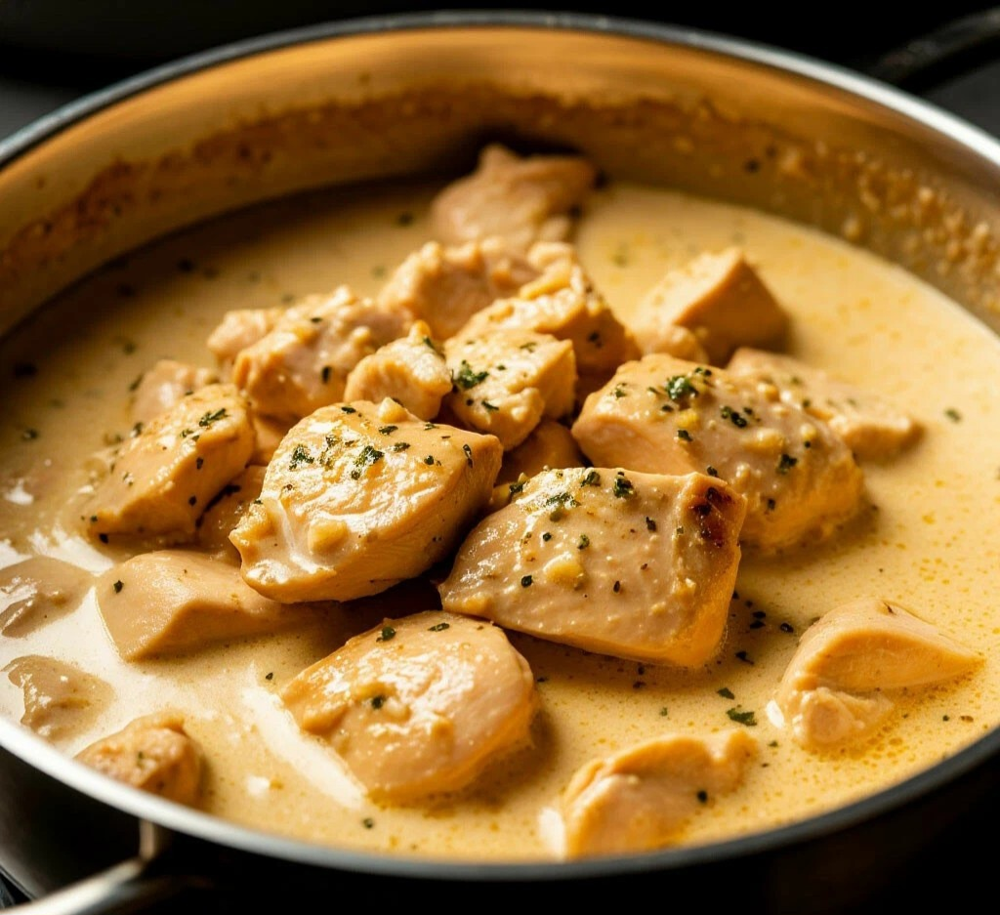
Куриное филе в сливочном соусе
Нежное куриное филе, запечённое в сливочном соусе с ароматными травами.
Ингредиенты
- Куриное филе — 500 г
- Сливки — 200 мл
- Лук — 1 шт.
-
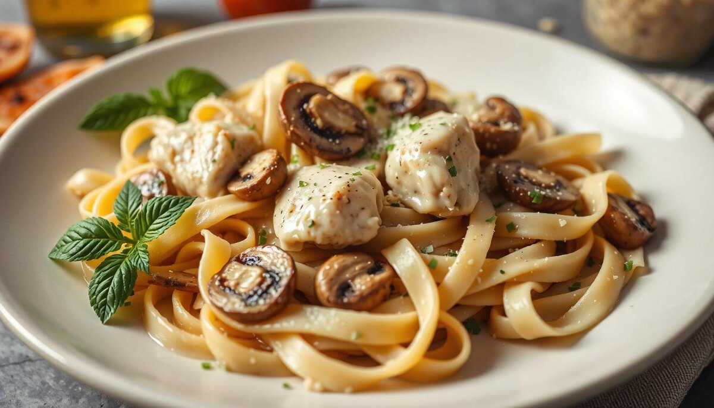
Паста с грибным соусом
Классическая паста с соусом из шампиньонов и пармезана.
Ингредиенты
- Паста — 300 г
- Грибы — 250 г
- Пармезан — 50 г
-
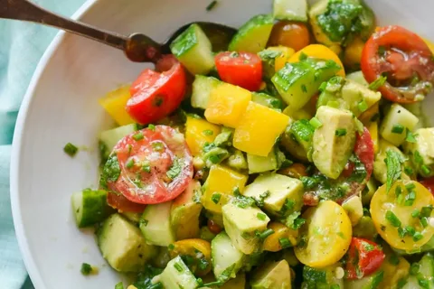
Салат с авокадо
Освежающий салат с авокадо, помидорами и лаймовым соусом.
Ингредиенты
- Авокадо — 2 шт.
- Помидоры — 200 г
- Лайм — 1 шт.
-
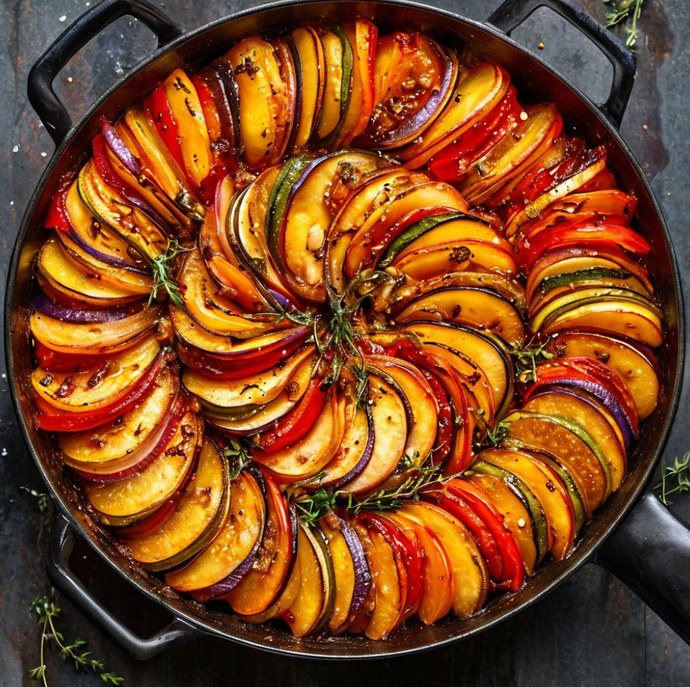
Рататуй
Овощное рагу из баклажанов, кабачков и томатов.
Ингредиенты
- Баклажан
- Кабачок
- Томат — 3 шт.
-
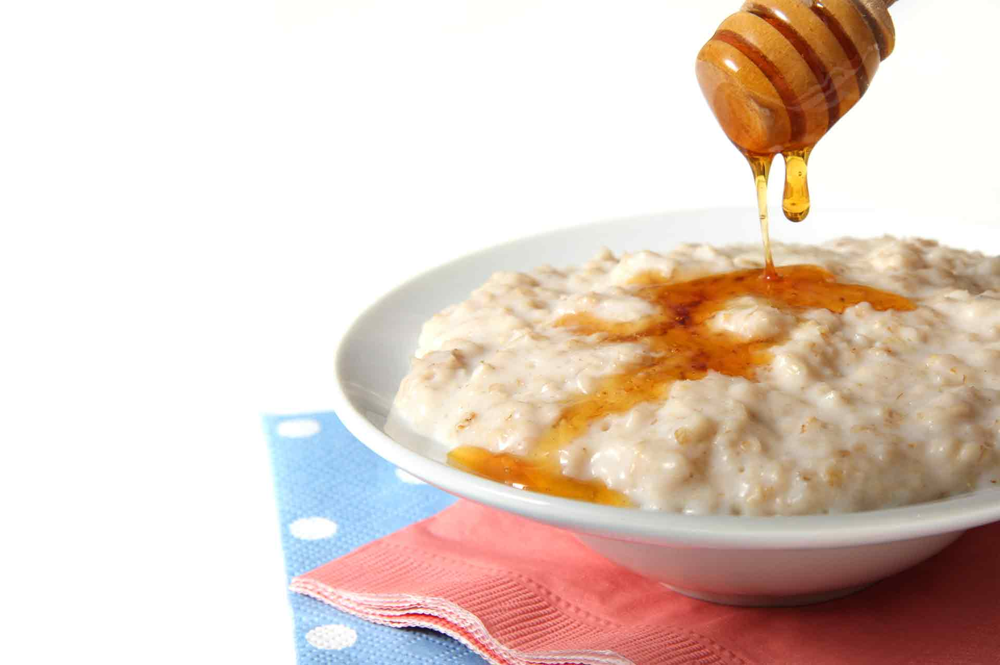
Овсяная каша с медом
Полезная каша на завтрак с ягодами и медом.
Ингредиенты
- Овсянка — 100 г
- Молоко — 300 мл
- Мед — 1 ст.л.
-
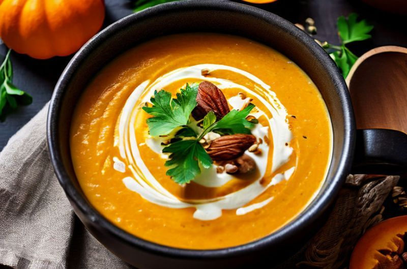
Суп-пюре из тыквы
Кремовый суп из тыквы со сливками и пряностями.
Ингредиенты
- Тыква — 600 г
- Лук
- Сливки
-
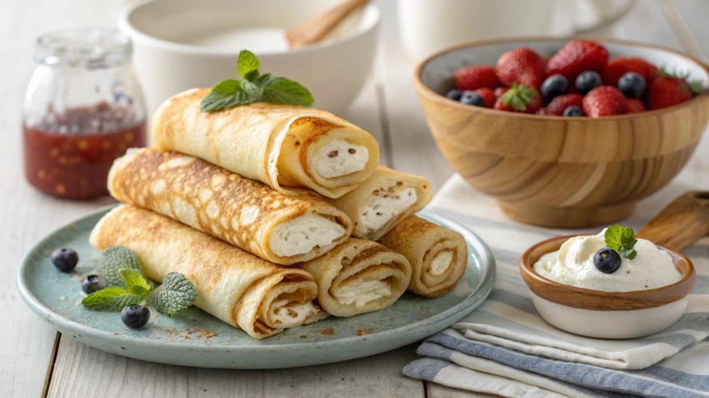
Блины с творогом
Тонкие блины с начинкой из сладкого творога.
Ингредиенты
- Мука
- Молоко
- Творог
-
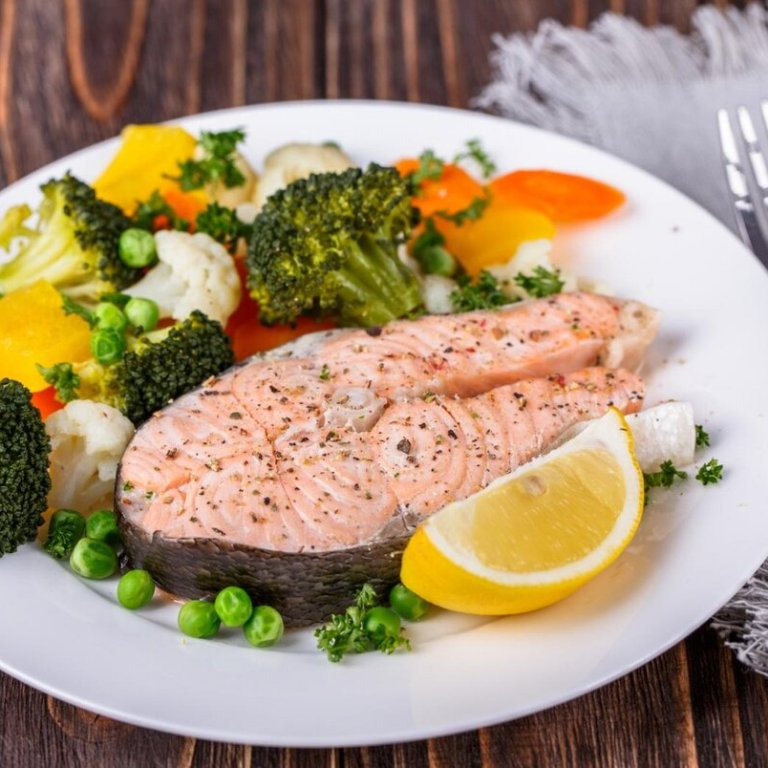
Рыба на пару
Нежная рыба, приготовленная на пару с лимоном.
Ингредиенты
- Филе рыбы — 400 г
- Лимон
- Соль, перец
-
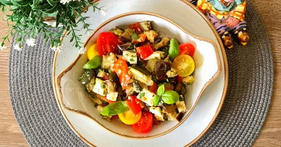
Тёплый салат с печёными овощами
Овощи, запечённые до карамелизации, под соусом.
Ингредиенты
- Перец
- Баклажан
- Оливковое масло
-
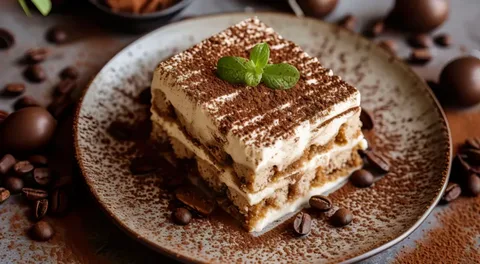
Тирамису
Классический итальянский десерт с маскарпоне и кофе.
Ингредиенты
- Маскарпоне
- Печенье савоярди
- Кофе
-
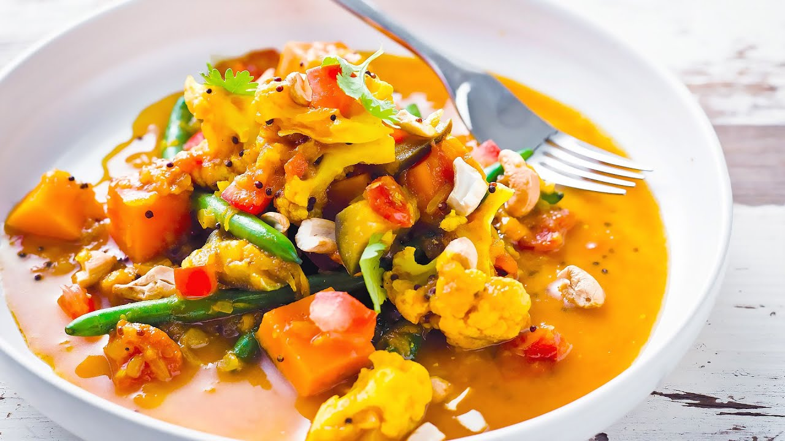
Карри с овощами
Ароматное карри с кокосовым молоком и овощами.
Ингредиенты
- Кокосовое молоко
- Карри паста
- Овощи
-
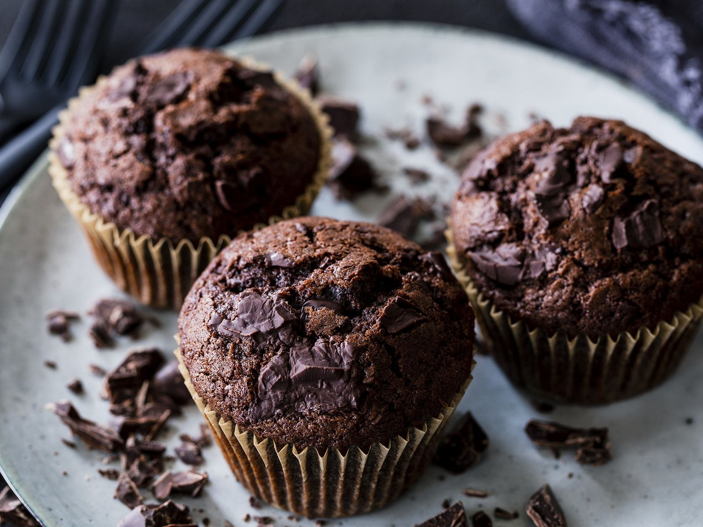
Шоколадный кекс
Насыщенный кекс с бурым шоколадом и глазурью.
Ингредиенты
- Шоколад
- Мука
- Яйца